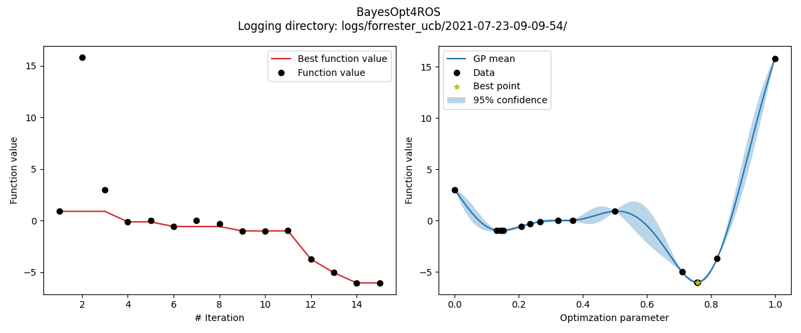

Getting started¶
Here you find two ways of getting started with the BayesOpt4ROS package. If you already have a catkin workspace and would like to directly integrate BayesOpt4ROS into your workflow, please see section Your own workspace. In case you just want to try out the package, follow Example workspace (Docker) to set up a workspace inside a Docker container.
Your own workspace¶
For the following steps, we’ll assume that ${WORKSPACE} is the root of your catkin workspace.
Requirements¶
BayesOpt4ROS requires Python 3, which is the default version when you use ROS Noetic. If you are using ROS Melodic (or older) you first need to set up Python 3 for your workspace.
Installation¶
First, let’s clone BayesOpt4ROS as a package into your workspace:
cd ${WORKSPACE}
git clone https://github.com/lukasfro/bayesopt4ros.git src/bayesopt4ros
Our package is written in Python and requires some 3rd parties libraries to work. You can easily install them via pip:
python3 -m pip install -r src/bayesopt4ros/requirements.txt
Now we should be ready to build the workspace:
catkin_make
# Or
catkin_make_isolated
# Or
catkin build
# Don't forget to source the setup files
source devel(_isolated)/setup.bash
You should be good to go now. One way of quickly testing if the installation worked is by launching the server.
roslaunch bayesopt4ros bayesopt.launch
You should see the output of the server similar to this:
[INFO] [1616593243.400756]: [BayesOptServer] Iteration 0: Ready to receive requests.
Note
If roslaunch fails, make sure that the node script is executable.
chmod +x src/bayesopt4ros/nodes/bayesopt_node.py
The server node is now ready to receive requests from a client (your node). Continue with the tutorial to see what callback methods you need to implement.
Client implementation¶
The BayesOpt4ROS package uses the ActionServer/ActionClient communication pattern. On the official ROS homepage you can find tutorials for an exemplary implementation. Since BayesOpt4ROS already provides the server side, you just need to implement the client code. In the following, we show you what methods/callbacks you have to implement to communicate with the server (depending on the language of your choice).
First, we need to instantiate the respective client node and tell it to listen to the BayesOpt server.
C++:
#include "actionlib/client/simple_action_client.h"
#include "bayesopt4ros/BayesOptAction.h"
Client client_node_("BayesOpt");
client_node_.waitForServer();
Python:
import actionlib
from bayesopt4ros.msg import BayesOptAction, BayesOptGoal
self.client = actionlib.SimpleActionClient("BayesOpt", BayesOptAction)
self.client.wait_for_server()
Querying the server to get new parameters is done by sending a ‘goal’. Here is where you provide the server with your experiment’s outcome via y_new, i.e., the function value of the objective that you want to optimize.
C++:
BayesOptGoal goal;
goal.y_new = 42.0;
client_node_.sendGoal(goal, boost::bind(&ExampleClient::bayesOptCallback, this, _1, _2));
Python:
goal = BayesOptGoal(y_new=y_new)
self.client.send_goal(goal)
Whenever the server is done computing a new set of parameters, the respective callback method is called. For the sake of this example, we just store the result in a class variable x_new.
C++:
void bayesOptCallback(const actionlib::SimpleClientGoalState& state, const BayesOptResultConstPtr& result) {
x_new_ = result->x_new;
}
Python:
self.client.wait_for_result()
result = self.client.get_result()
x_new = result.x_new
Note
The above Python example waits the server do be done until it continues running. This behaviour is not always desired. You can also implement an asynchronous pattern via callback functions in Python. The official ROS documentation does not provide such an example, but this answer has everything that you should need.
That’s already it! By repeatively querying the server via the pattern above, you will receive new parameters that will optimize your objective. Full examples of exemplary clients can be found here for C++ and here for Python.
Example workspace (Docker)¶
In case you do not directly want to install BayesOpt4ROS into your own workspace, we provide a repository to test the package within a Docker container. If you do not have Docker installed, now would be a good time to do so.
Set up Docker¶
First, clone the workspace repository:
git clone https://github.com/lukasfro/bayesopt4ros_workspace.git
cd bayesopt4ros_workspace
Next, let’s create an image from the provided Dockerfile and run a container
# -t tags a docker image with a name, 'bayesopt4ros' in our case
docker build -t bayesopt4ros .
# -it runs the container in interactive mode
# -v mounts our current directory to the workspace in the container
docker run -it -v $(pwd):/root/ws/ bayesopt4ros
Note
If you are working on a MacBook M1 with ARM chip, you need to adapt the Dockerfile to pull the right ROS image. Just have a look here and change the base image:
# For all machines except MacBooks with M1 CPU
FROM osrf/ros:noetic-desktop-full
# Use this image when your are using a MacBook with M1 CPU
FROM arm64v8/ros:noetic
Running test client¶
The following commands will only work within the Docker container. Let’s build the workspace (choose any build system of your choice):
catkin_make_isolated
source devel_isolated/setup.bash
The easiest way to see the server in action is by executing one of the integration tests:
rostest bayesopt4ros test_client_python.test
If you want to look at the results, we provide a small visualization script. You can run the following command outside of the running Docker container if you want to directly show the results. We also save an image to disk to the logging directory (this also works within the Docker container since we mounted your local workspace to the container workspace).
python3 visualize.py --log-dir logs/forrester_ucb
The resulting image should look something like this
{kind=link}